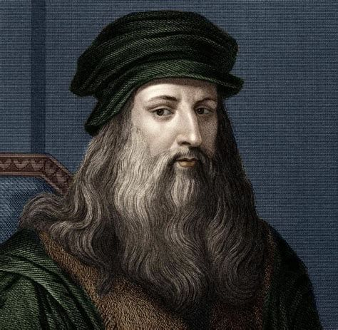

The Renaissance man

Born out of wedlock in Vinci, Italy (just outside Florence), Leonardo’s illegitimate standing kept him from receiving a
good education and excluded him from the most lucrative occupations. However, such limitations never hindered (and
perhaps even fueled) da Vinci’s desire for knowledge and great ambition.
At the age of 15, da Vinci became the apprentice of the painter Andrea del Verrochio in Florence, where his skills as an
artist developed, flourished and even intimidated his mentor. While always interested in inventions, it was a change of
scenery in 1482 that truly unleashed the inventor in da Vinci.
Looking for a broader scope of work, da Vinci moved from Florence, widely considered the cultural capital of Italy, to
Milan, a much more political and militaristic city. There, da Vinci sold himself to Duke Ludovico Sforza (a successful
military leader called "the dark one") as a military engineer. In the city that "lived and died by the sword", da Vinci
began developing many of his famous war inventions.
Death
Da Vinci spent 17 years in Milan working for the Duke, inventing, painting, sculpting, studying science and conceiving
an endless stream of innovative and daring ideas. Without a doubt, the 17 years spent in Milan were da Vinci’s most
productive period. But, of course, all things must come to an end.
In 1499, the French invaded Milan and Duke Sforza was sent fleeing the city. Leonardo spent the remaining years of his
life traveling to cities like Venice and Rome to work on different projects, with a greater concentration on his art
(starting on his most famous piece, the Mona Lisa, in 1503) and studies in anatomy (da Vinci conducted over 30 autopsies
in his lifetime).
After envisioning hundreds of inventions, bringing to life legendary works of art and making breakthroughs in a vast
array of other fields (ranging from astronomy to architecture), da Vinci died in 1519 at the age of 67.
Legacy
Leonardo's fame within his own lifetime was such that the King of France carried him away like a trophy, and was claimed
to have supported him in his old age and held him in his arms as he died. Interest in Leonardo and his work has never
diminished.
The interest in Leonardo's genius has continued unabated; experts study and translate his writings, analyse his
paintings using scientific techniques, argue over attributions and search for works which have been recorded but never
found